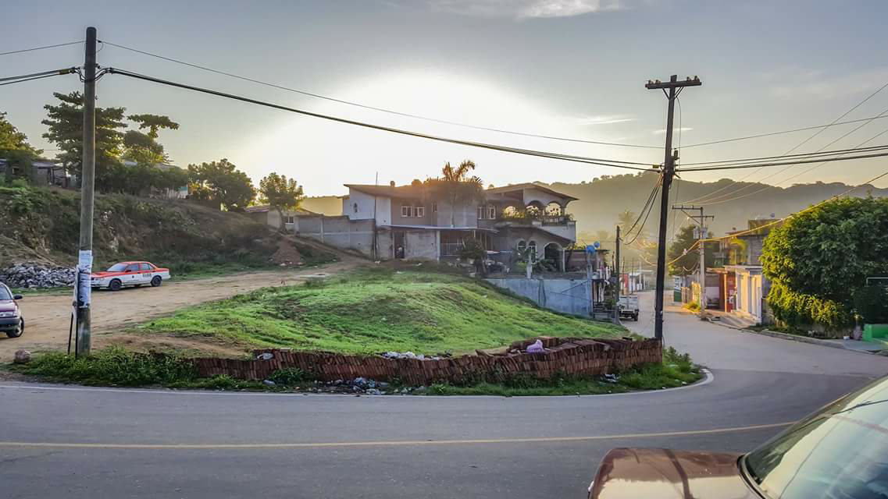

La Costa Chica es una subregión que se extiende, según coinciden la mayoría de los estudiosos del tema, desde San Marcos en el estado de Guerrero hasta Puerto Escondido en Oaxaca. Región en la que conviven pueblos indígenas, mestizos y afromexicanos, esta convivencia ha generado prestamos culturales que, aunada a sus propias tradiciones y costumbres que dan sentido de pertenencia. Santa María Huazolotitlán es una comunidad indígena, en donde la mayoría de los habitantes hablan la lengua mixteca. Localidad que según la etimología significa “Lugar de guajolotes”, “Huexlotl” = guajolote y “Titlán” = lugar de. Sin embargo, hay quienes plantean otra hipótesis, sustentando su idea de que en Huazolotitlán lo que había eran faisanes y no guajolotes y consideran más viable la leyenda de la formación de Huazolotitlán, de ahí el nombre de Ñuu tye´ nd+.
Cuenta la leyenda que, en tiempos muy remotos, cuando se asentaron los primeros núcleos de poblaciones en esta región, partió un ser mitológico de Ñuu Savii (pueblo de lluvias), hoy Chicahuaxtla; empezó a recorrer el cañón de su mismo nombre, y cada cosa que le sucedía en cada uno de los poblados por donde pasaba en su recorrido, le daba pretexto para nombre.
El primer caso sucedió cuando tomó agua en un río, resulta que ésta era salada, por lo que a la población asentada ahí le puso el nombre de Río Salado, hoy ese pueblo es conocido como Ixtayutla, continúa su recorrido este ser ancestral, cruza la Sierra Madre del Sur y llega a una población asentada en la base de un cerro, le puso por nombre Cha’a yu ko, que significa “Pie del cerro”, hoy San Agustín Chayuco.
Sigue caminando y más adelante llega a un pueblo en donde había muchos bejucos, se entiende que se trata del bejuco come-mano por su color rojizo y le puso por nombre Yo’o Kua, que significa “Bejuco Colorado”, hoy se conoce como San Juan Colorado, caminando poco después llega a la orilla de otra comunidad, se encuentra un manantial en donde toma agua y se lava la boca, al hacerlo siente mucha frescura, razón por la cual le puso por nombre Doo Yuu, Hoy Pinotepa de Don Luis,
Continúa su peregrinar y llega a un poblado en donde había una epidemia, por este motivo había ya varias personas fallecidas, a este pueblo le puso Chii Kua, que significa “muchos muertos”, actualmente es el pueblo de Jicayán, sigue su camino hasta encontrarse con otra población, en donde sus habitantes estaban llenos de urticaria y le pone por nombre Ñuu Du Cha’a, que significa “Pueblo de roncha”, este ser sigue su marcha y llega a otra población, ahí le cae con una fuerte fiebre por lo que le llamó Ñuu Ño’ko que significa “Pueblo de calentura” hoy Pinotepa Nacional
Sigue su recorrido por la región y se va por el Río de la Arena hasta llegar al siguiente pueblo, ahí le arrecia la calentura y se le cae la cabellera, por completo, por este suceso le nombra a la población Ñuu Tye Dyi, que significa “Cabeza pelona” hoy es Santa María Huazolotitlán. En el siguiente pueblo al que llega, le convidan unos tamales, el primer tamal que abrió era de iguana, estaba la cabeza de la iguana en su tamal, por lo que nombra al pueblo Shini Titi, que significa “Cabeza de iguana”, hoy se llama San Andrés Huaxpaltepec.
Al regresar cerca de su punto de partida, llega a otra población en donde le invitan a comer lo que las redes recogieron del mar y le pone el nombre Kuu Chaca, que significa “Pueblo de pescado” ahora es el pueblo de Santa Catarina Mechoacán.
Historia contada en 1938 por el tatarabuelo del Sr. Felipe Hernández. Recontada por el Profesor Gordiano Gómez López.